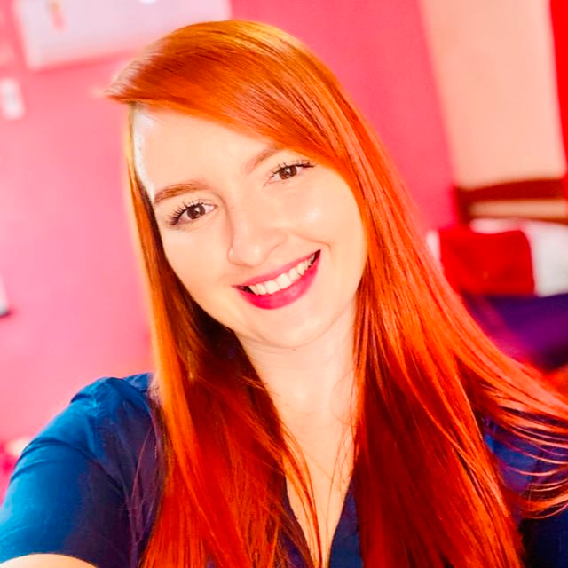
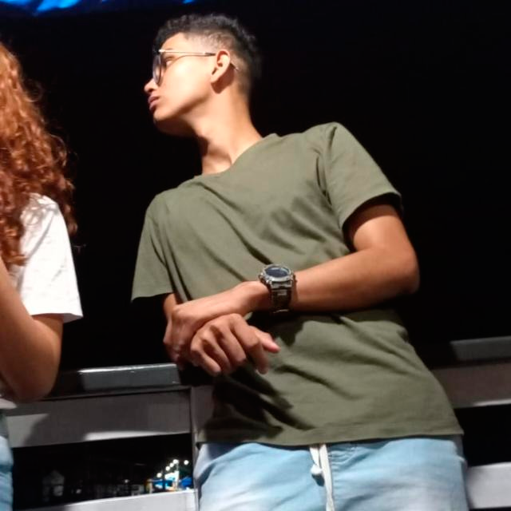
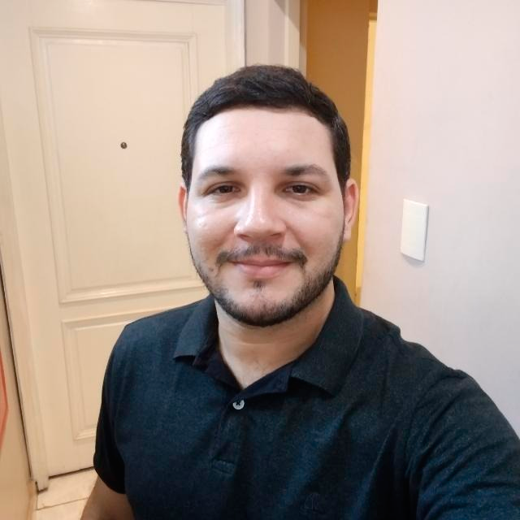

01
Camylla Wolfgram
Sistemas de Informação
Projeto de extensão • Cursos VirtuaisO Cursos Virtuais foi desenvolvido por estudantes de Sistemas de Informação como uma experiência prática de tecnologia aplicada à educação.

Sistemas de Informação
Projeto de extensão • Cursos Virtuais
Sistemas de Informação
Projeto de extensão • Cursos Virtuais
Sistemas de Informação
Projeto de extensão • Cursos VirtuaisAprender também é construir, testar, melhorar e compartilhar.
Uma ideia que representa o espírito deste projeto acadêmico.